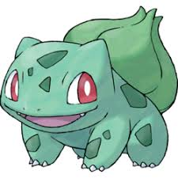

Bulbasaur is a dual-type Grass/Poison Pokémon introduced in Generation I. It evolves into Ivysaur starting at level 16, which evolves into Venusaur starting at level 32. Along with Charmander and Squirtle, Bulbasaur is one of three starter Pokémon of Kanto available at the beginning of Pokémon Red, Green, Blue, FireRed, and LeafGreen.
